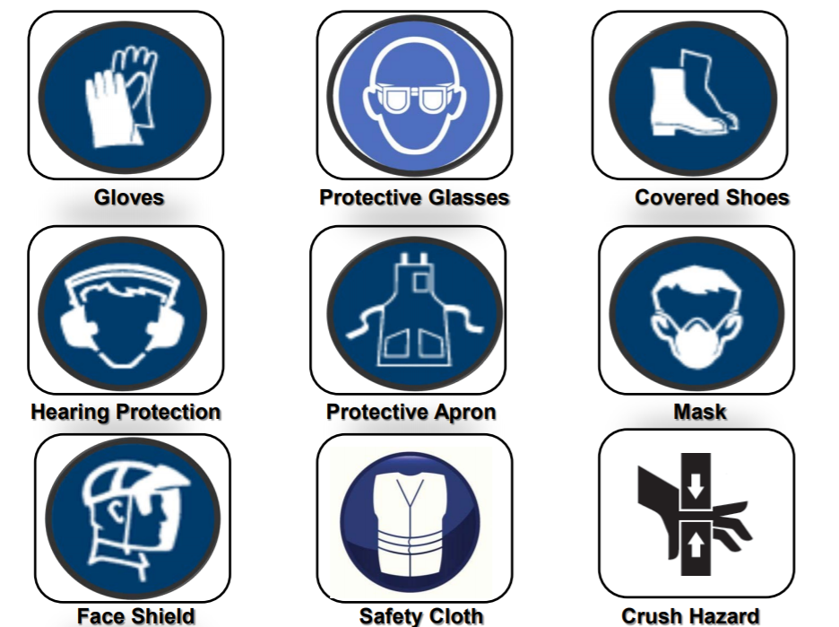

FabLab Safety & Tools

Safety is our number one priority ~
Through this module we will be taught how to operate the many different machines in the FabLab to create stuff,
but before that we must understand the hazards so we can stay safe when in the Lab.
1. General lab and workshop safety
Full documentation and info can be read here.
Eating and drinking are strictly prohibited in laboratories and workshops.
Students must switch off their mobile phones while working in laboratories and workshops.
Be alert. Observe and abide all warning signs and safety notices.
Be familiar with the location of the first-aid box, safety eye-wash and / or shower, chemical spill kit
within each laboratory and workshop.
Know the location of all fire escape exits and assembly area.
No mischievous or malicious behaviour is allowed in the laboratory/workshop.
Safe operating or work procedures must be referred or adhered to.
Do not operate machines or equipment until you have been properly instructed by your lecturerin-charge or TSO.
Seek help from your lecturer-in-charge or TSO whenever you are in doubt.
Do not tamper with all safety devices and > machine guards.
Do not take unsafe short cuts or by-pass any safety devices or controls.
Keep your work area clean before leaving the laboratory/workshop
2. Dress Code
Apart from looking professional, proper attire is important as it can protect you from injuries.


3. Safety and Regulations in the FabLab and Machine shop
When operating machines, it is advice that you thoroughly familiarise yourself with it and to strictly follow the safety rules and regulations. When in doubt do not hesitate to ask lecturers or Technical Support Officers.
A clean, neat, orderly machine and work area is the first step in safety. Keep all guards and covers
in place and all machine cabinet doors closed.
Do not operate machines or equipment until you have been properly instructed and authorized to
do so by your Instructor/TSO.
Do not start the machine or spindle until the work-piece and work-holding devices are securely
fastened.
During any activity that requires the handling of work-holding devices, tools, measuring devices, or
work-piece parts in the cutting zone, the machine’s motors must be in the stationary mode.
Know the position of the Emergency Stop push-button of the machine. Activate it during
emergency situation.
Do not lean on any moving parts when the machine is in operation.
If you must remove hot tooling or sharp tools, switch off the machine and put on the hand gloves.
Never clear chips when the spindle is rotating. Never remove chips with your bare hands. Use a
brush or tool designed for that purpose.
When operating machine, it requires your undivided attention. No “horseplay” or “monkey about”
is allowed in your work area. If you need to attend to another matter, stop the machine until you
can give it the full attention required.
Be alert for loose, worn, or broken parts and abnormal sounds and noises. When you suspect a
problem, do not operate the machine. Report the problem at once to the Instructor or Technical
Supporting Officer (TSO) for corrective action.
Do not use machine, if safety guard is not properly installed.
Do not leave any materials lying on the floor. Unwanted materials should be put into the scrap
bins.
When operating the machine tools, ensure that other workshop users are not exposed to danger.
Always use a brush to sweep off all waste materials from the workbench.
Do not forget to clean up your workplace and machine tools after each use.
4. Safety and Hazard Symbols
These symbols are often found on machines and Placards. It is important to take note of them as they inform what kind of hazards one face when operating a machine as well as protective gear needed to operate it.
